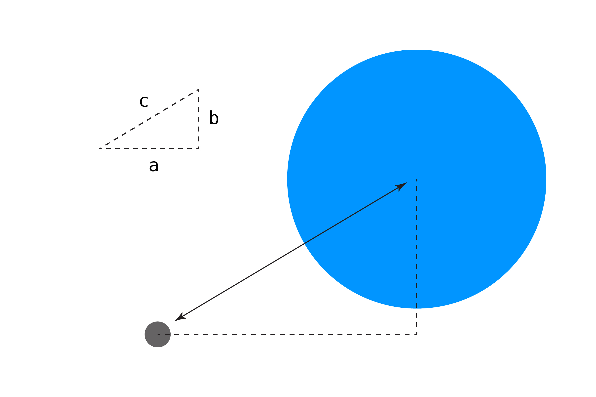

Перевірка зіткнення двох точок зводилася до простого порівняння координат. Та щойно у фігури з’являється розмір, нам на допомогу приходить геометрія. Щоб дізнатися, чи опинилася точка всередині круга, пригадаймо знамениту теорему Піфагора:
a2 + b2 = c2
У будь-якому прямокутному трикутнику сума квадратів двох катетів (a та b) дорівнює квадрату гіпотенузи (c). Отже, знаючи довжини катетів, ми можемо знайти довжину гіпотенузи, добувши квадратний корінь:
c = sqrt((a * a) + (b * b));
Як це пов’язано з нашим кругом і точкою? Уявіть пряму лінію, проведену від точки (px, py) до центра круга (cx, cy). Ця лінія є гіпотенузою уявного прямокутного трикутника, де горизонтальний катет — це різниця координат за віссю x, а вертикальний — різниця координат за віссю y!

Спочатку знайдемо довжини катетів — відстані між точкою та центром круга за осями x і y:
const distX = px - cx;
const distY = py - cy;Тепер за теоремою Піфагора обчислимо пряму відстань між ними:
const distance = sqrt((distX * distX) + (distY * distY));Наприклад, якщо точка має координати (10, 10), а центр круга розташований у (40, 50), то горизонтальна різниця становить -30, а вертикальна — -40. Може виникнути слушне запитання: «А чи не завадить нам знак мінус?» Зовсім ні! Коли ми множимо число саме на себе (-30 * -30 = 900), квадрат будь-якого від’ємного числа завжди стає додатним. У підсумку отримуємо sqrt(900 + 1600) = 50.
Залишився останній логічний крок. Радіус круга — це відстань від його центра до будь-якої точки на його межі. Тож якщо знайдена відстань distance менша за радіус круга radius (або дорівнює йому), наша точка лежить всередині круга — зіткнення відбулося!
if (distance <= radius) {
return true;
}
return false;Подивіться, як це працює в повному коді прикладу: коли курсор заходить усередину круга, той змінює колір із блакитного на помаранчевий.
// координати центра та радіус круга
let circleX;
let circleY;
const radius = 100;
function setup() {
createCanvas(window.innerWidth, window.innerHeight);
noCursor();
strokeWeight(15); // збільшена товщина точки для кращої видимості
circleX = width / 2;
circleY = height / 2;
}
function draw() {
background(255);
// перевіряємо, чи точка курсора всередині круга
const isColliding = collidePointCircle(mouseX, mouseY, circleX, circleY, radius);
// змінюємо колір круга під час зіткнення
if (isColliding) {
fill(255, 150, 0);
} else {
fill(0, 150, 255);
}
// малюємо круг (функція circle приймає діаметр, тому множимо радіус на 2)
noStroke();
circle(circleX, circleY, radius * 2);
// малюємо точку на місці курсора
stroke(0, 150);
point(mouseX, mouseY);
}
// перевірка на зіткнення між точкою та кругом
function collidePointCircle(px, py, cx, cy, radius) {
// обчислюємо відстань між точкою та центром круга за теоремою Піфагора
const distX = px - cx;
const distY = py - cy;
const distance = sqrt((distX * distX) + (distY * distY));
// якщо відстань не перевищує радіус, точка лежить всередині круга
if (distance <= radius) {
return true;
}
return false;
}Пошук відстані за теоремою Піфагора зустрічатиметься нам ще багато разів. У програмуванні графіки це настільки часта операція, що в p5.js для неї є готова вбудована функція dist(px, py, cx, cy). У власних програмах ви можете сміливо користуватися нею, проте в книзі ми залишаємо розгорнуту формулу, щоб ви бачили всю математику «під капотом» і могли легко відтворити її в будь-якій мові програмування.
Цікавий нюанс: ефект «кулі крізь папір». Уявіть, що в
грі летить крихітна куля зі швидкістю 300 пікселів за кадр, а на її шляху
стоїть мішень завширшки 100 пікселів. Оскільки гра оновлює екран
дискретними кадрами (зазвичай 60 разів на секунду), в одному кадрі куля
може бути ще перед мішенню, а в наступному — уже позаду неї! Жоден
кадр не зафіксує кулю всередині мішені, і вона пролетить наскрізь.
У геймдеві це явище називають тунелюванням або проблемою «кулі
крізь папір» (bullet through paper). Для надшвидких об’єктів
замість перевірки окремих точок перевіряють відрізок траєкторії між
попереднім і поточним кадром (про перетин із лініями ми поговоримо в
Розділі 3) або застосовують методи
неперервного виявлення зіткнень
(Continuous Collision Detection, CCD). Більше практичних порад
можна знайти в обговоренні на
GameDev StackExchange.
Далі: Круг і Круг